Verton Standard
Надеждна кабина с изчистен дизайн. Изработена е от материали, които издържат дълго без проблеми.
- Конструкция
- Стомана
- Таван
- Лазерно изрязани ламинирани панели
- Подходяща за
- Всеки тип сграда
Изберете вида асансьор и кабината. Задвижването и детайлите уточняваме заедно при огледа на сградата.
Какво ще пренася асансьорът определя всичко останало.
За жилищни, офис и обществени сгради.
Електрически или хидравличенТоварни платформи за складове, фабрики и търговски обекти.
Най-често хидравличенЗа подземни и надземни гаражи и паркинги.
Най-често хидравличенМалки асансьори за ресторанти, хотели и заведения.
По проектПет модела. Всеки може да се комбинира с облицовките и подовете по-долу.
Надеждна кабина с изчистен дизайн. Изработена е от материали, които издържат дълго без проблеми.

Стени изцяло от неръждаема стомана. Средата между стандартното и по-представителното решение.

Светъл и стилен интериор, който прави кабината да изглежда по-просторна.

Топлината на дървото и здравината на стоманата. Запазва вида си при ежедневна употреба.
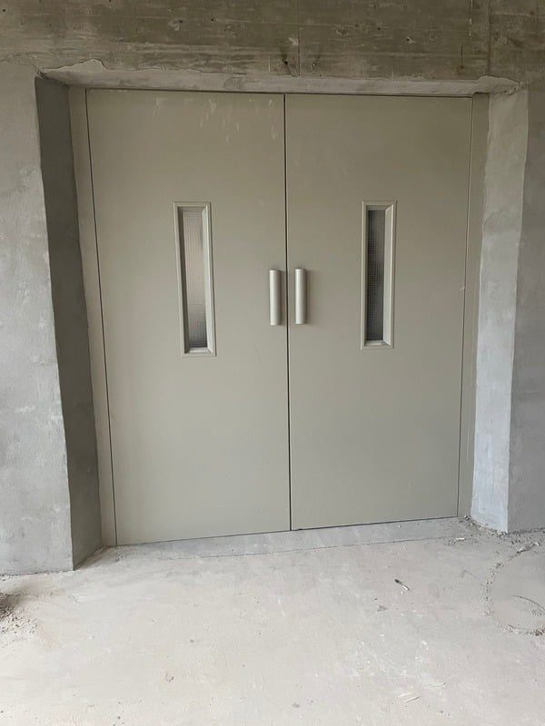
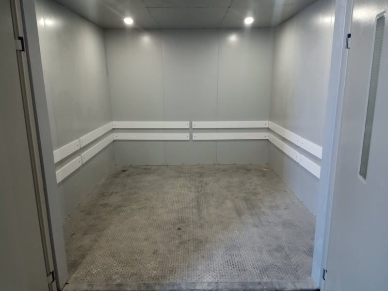
Здрава конструкция за тежки условия. Функционалният дизайн улеснява товаренето и разтоварването.
Мостри можем да покажем на място при огледа.
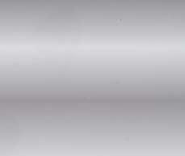
Сребърен сатен
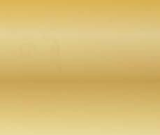
Златен сатен
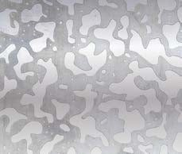
Сребърна вълна
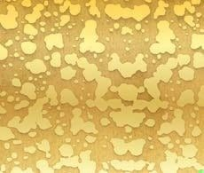
Златна вълна
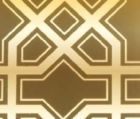
Златна геометрия
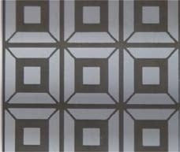
Сребърни квадрати
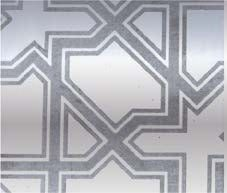
Сребърна звезда
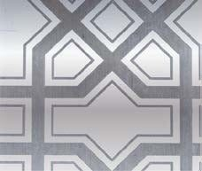
Сребърна геометрия
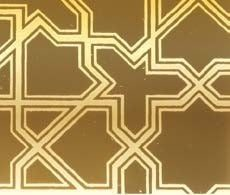
Златна звезда
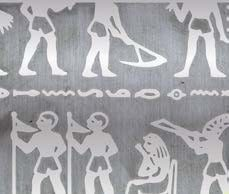
Сребърен Египет
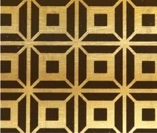
Златни квадрати
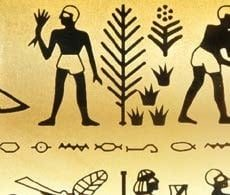
Златен Египет
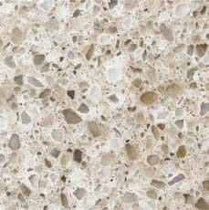
Светъл терацо
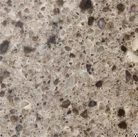
Пясъчен терацо
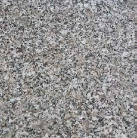
Сив гранит
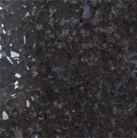
Черен терацо
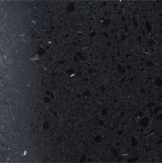
Антрацит
Изборът зависи от сградата и товара. Препоръчваме решение след огледа.
| Параметър | ЕлектрическиБез машинно помещение | ХидравличенЗа тежки товари |
|---|---|---|
| Къде е техниката | В шахтата, под тавана | Хидравличен агрегат с блок за управление |
| Машинно помещение | Не е нужно | Уточнява се по проект |
| Подходящ за | Пътнически асансьори, когато е важно да се спести площ | Товарни и автомобилни, пътнически при малък трафик |
| Двигател и управление | Безредукторен синхронен двигател | Хидравлично задвижване |
| Компоненти | SICOR и Alberto Sassi, Италия | Biofial Hydraulics, Гърция |
| При спиране на тока | UPS по избор | UPS по избор |
| Схема |  |  |
Всички асансьори Verton отговарят на БДС EN 81-20:2020 и БДС EN 81-50:2020.
Идваме на оглед, измерваме шахтата и ви предлагаме вид, кабина и задвижване.